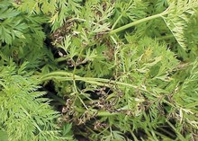
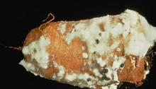

Carrot
Description
Carrot, Daucus carota, is an edible, biennial herb in the family Apiaceae grown for its edible root. The carrot plant produces a rosette of 8–12 leaves above ground and a fleshy conical taproot below ground. The plant produces small (2 mm) flowers which are white, red or purple in color. The root can grow to between 5 and 50 cm (2.0–20 in) long and reach 5 cm (2.0 in) in diameter. The foliage of the plant can reach a height of 150 cm (59.1 in) when in flower. The carrot plant can be annual or biennial and may also be referred to as wild carrot. The plant is believed to have originated in Europe or the Western Mediterranean.
.jpg)
Harvested carrots
Propagation
Basic requirements
Carrots are cool-season crops which can be planted in early Spring and left in the ground all summer for harvest in the fall. Carrots grow best in a well-draining, loose, sandy soil which is free of large rocks and has a pH between 5.5 and 7.0. They require full sun for optimum development but will tolerate some very light shade. The optimum temperature for their growth is between 16 and 24°C (61–74°F). Carrot seedlings are very sensitive to extremes of temperature, very hot weather may kill the plant whereas temperatures below 10°C (50°F) tend to cause the development of longer, paler roots. The plants also require plenty moisture and organic matter. Carrots do very well in raised beds and can also be grown in containers.
Sowing seeds
Carrot is usually direct seeded and should be planted 3–5 weeks before the least frost date in your area. Soil should be prepared prior to planting by removing rocks and breaking up any hard lumps of soil down to a depth of at least 30 cm (12 in). It is also beneficial to work some compost into the soil prior to planting. Avoid using fresh manure as it can cause forking of the roots. Sow seeds 6 mm (0.25 in) deep, leaving 5 cm (2 in) between seeds and approximately 30 cm (1 ft) apart. When seedlings reach 2.5 cm (1 in) in height, thin them to a final spacing of 7.5 cm (3 in) between plants by snipping with scissors - this avoids damaging plant roots.
General care and maintenance
Carrots benefit from a plentiful moisture supply and should be provided with 2.5 cm (1 in) of water each week. Mulching around the plants helps to conserve moisture and reduce weeds. Any weeds growing around the plants should be carefully removed. The plants should be fertilized 5–6 weeks after the seeds are sown.
Harvesting
Carrots are generally ready to harvest after around 2–3 months when the roots have reached 1.3 cm (0.5 in) in diameter. Allowing the carrots to stay in the ground for at least one frost makes them sweeter but care should be taken to harvest before the ground freezes or to cover the plants to prevent freezing. Carrots are harvested by gently digging around the plant to expose the top of the root and gently, but firmly pulling the root from the soil by grasping the top of the carrot just above the root. Carrot tops should be twisted off and the roots washed prior to refrigeration in airtight bags. Carrots may also be stored in moist sand to keep them fresh prior to use.
Common Pests and Diseases
Diseases
Alternaria leaf blight
Symptoms of Alternaria leaf blight on carrot foliage
Symptoms
Green-brown water-soaked lesions on leaves which enlarge and turn dark brown or black; lesions may coalesce causing leaves to yellow and die; lesions may be present on petioles
Cause
Fungus
Comments
Disease emergence favored by wet foliage and warm weather; rain and fog enhance the development of the disease; fungus survives in soil on crop debris but is killed when the debris decomposes
Management
Disease can be difficult to control in wet, warm conditions; apply appropriate fungicides when first symptoms appear or as a protective measure in humid areas; treat seeds with fungicide or hot water prior to planting; apply gibberellic acid to carrot foliage to promote upright growth and promote air circulation through canopy
Cottony rot (Sclerotinia rot)
Symptoms
Small, water-soaked, soft lesions on crown and roots; white fluffy fungal growth all over affected tissues; soft and decaying tissue developing
Cause
Fungus
Comments
Fungus can survive in soil for up to 10 years; disease emergence is favored by soils that are held close to saturation for periods in excess of 2 weeks
Management
Cultural practices play an important role in the control of cottony rot as there are no resistand carrot varieties: in carrot fields, the use of drip irrigation 5-8 cm below the soil surface can provide good control; deep plowing of soil and trimming back carrot foliage to promote air circulation can also be useful; fungicides may be warranted in periods of extended cool, damp weather